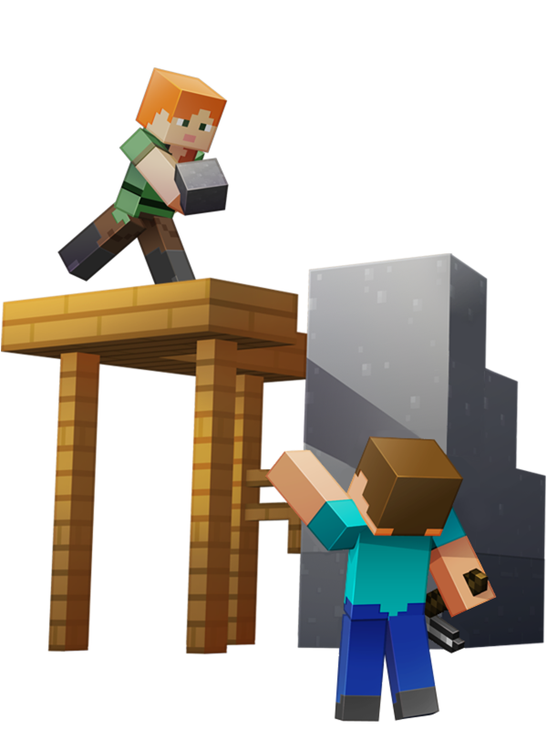
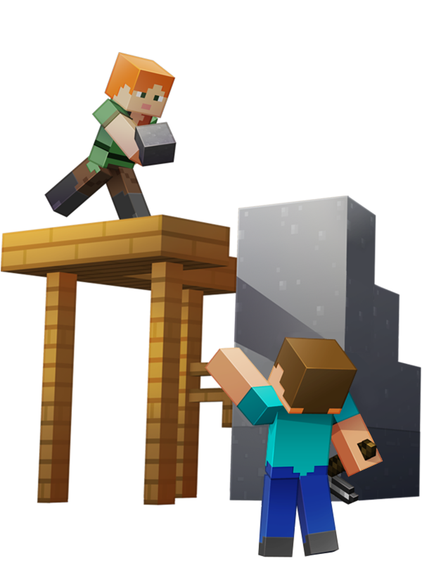
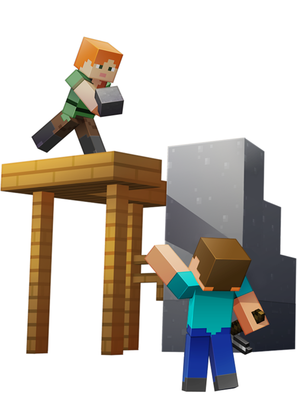
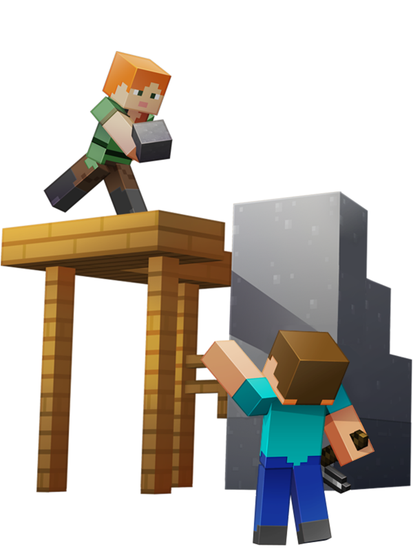

Hi! 这里是一名我的世界游戏热爱作者的个人网站。我致力于向更多人分享它的乐趣
Minecraft我的世界是一款风靡全球的沙盒游戏
以其极高的自由度而闻名于游戏界，玩家们可以在自己的世界中尽情创造、探索、生存
玩家们可以肆意为其开发模组，建造地图，乃至运营服务器，大大扩展了它的可玩性
目前其以超过3亿的销量位居世界游戏销量榜榜首，且有着源源不断的新鲜血液涌入，不断焕发出新的生机
如果你也感兴趣，不妨点击下方的按钮去游戏官网一探究竟
经典Minecraft旅程往往从痛击树木收集木头开始。接下来的步骤就任你选择啦，采掘珍稀矿石或搜寻珍贵材料都可以。但是要确保你的食物储备充足！
点击此处前往我的世界官网
制作工具，搭建简陋居所，或是在你的基地部署红石科技。可以在Mine craft中建造基地吗？只有一种方法能找出答案。
 


